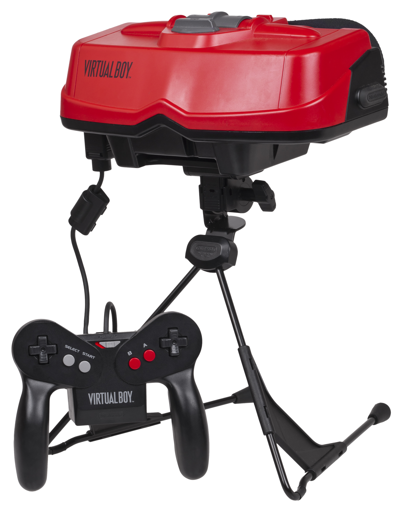
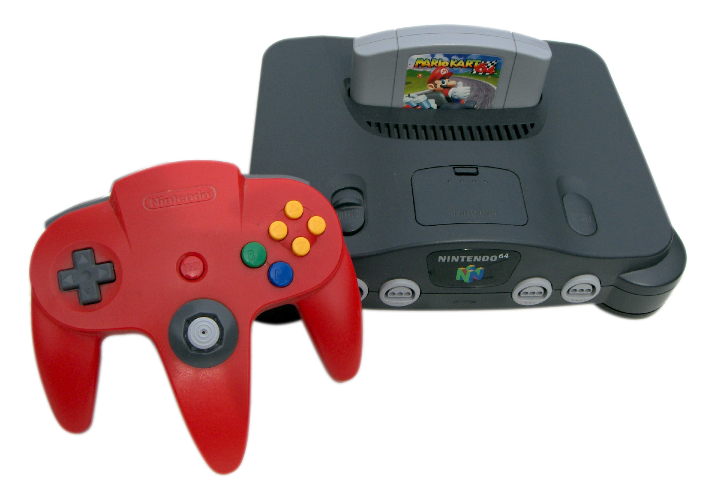
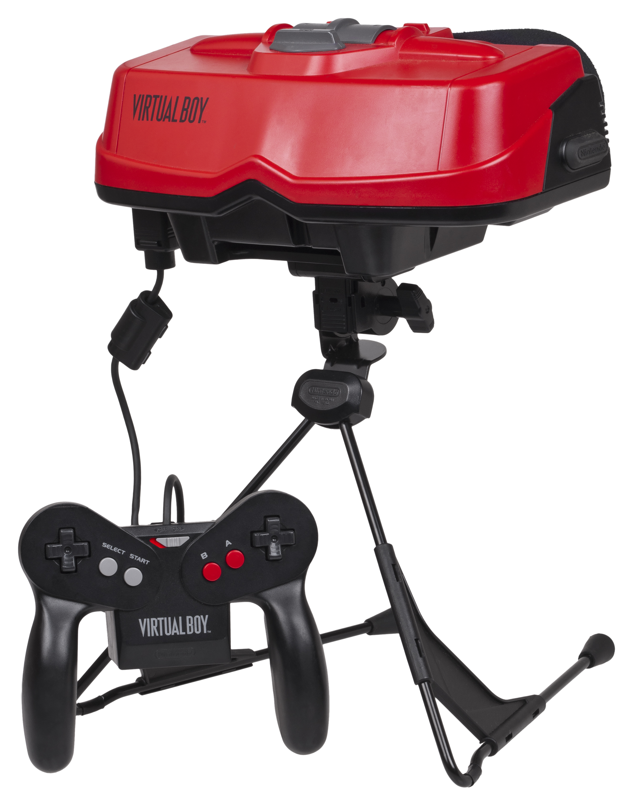
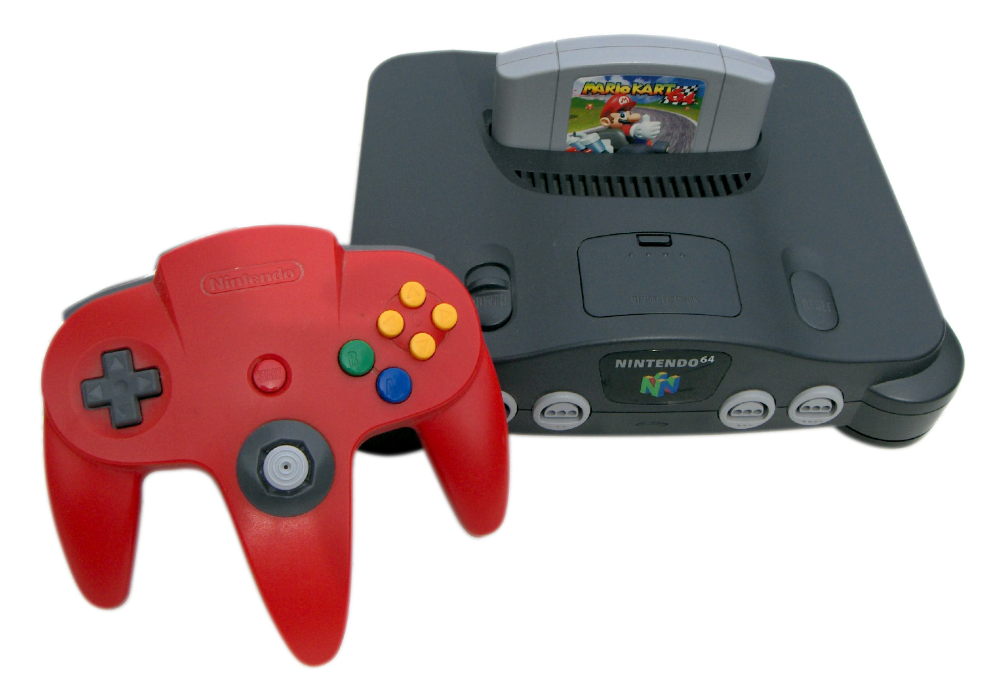

Nintendo developed 4 consoles in 1990 and 2 of them were essentially upgraded versions of the predecessors.
Super Nintendo Entertainment System (SNES)
Launch Year: 1990
Notable Games: Super Mario World, Earthbound, Super Metroid
Summary: When released, it started slow both in Japan and in the West as it faced many rival video consoles such as Sega's Mega Drive. Nostalgia and SNES launch game Super Mario World gave a boost on sales of SNES. In the end, SNES sold more than their rival Mega Drive and created numerous 2D classic games such as Earthbound, Super Metroid, Yoshi's Island, etc. It sold around 49 million units.
Virtual Boy
Launch Year: 1995
Notable Games: Virtual Land Wario Land, 3D Tetris
Summary: Nintendo tried to be ahead of it's time by introducing a Virtual Reality(VR) prototype, Virtual Boy. However, upon release, it raises concerns about motion sickness when using Virtual Boy. The sales does not help as it sold less than 1 million units (770,000 units approximately). Due to its low sales and problems with the console itself, while it is innovative at that time, it is highly regarded as a massive failure.
Nintendo 64
Launch Year: 1996
Notable Games: Super Mario 64, Mario Kart 64, Banjo-Kazooie
Summary: When it was launched, they struggled to compete with rival Sony's Playstation and Sega Saturn. In the end, it only managed to sell approx. 33 million units. Although sales were not that high as previous consoles, the sales are decent and fans considered it as a great, iconic Nintendo console with a part of its success due to famous games such as Goldeneye 007, Super Mario 64, etc.
 


